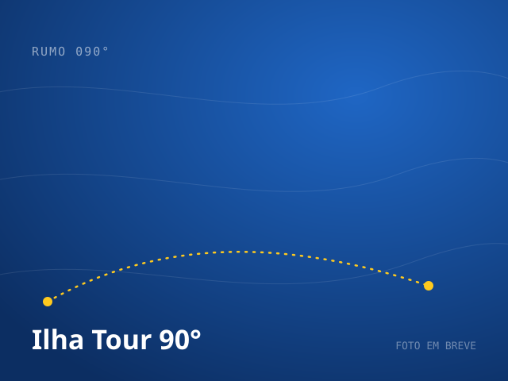
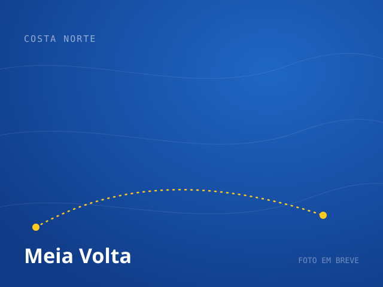
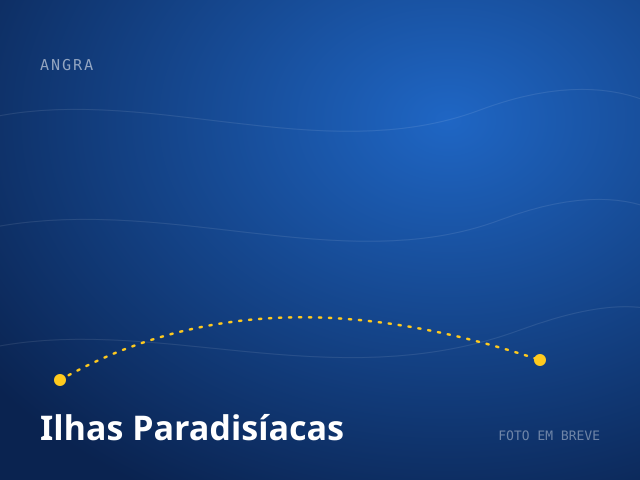
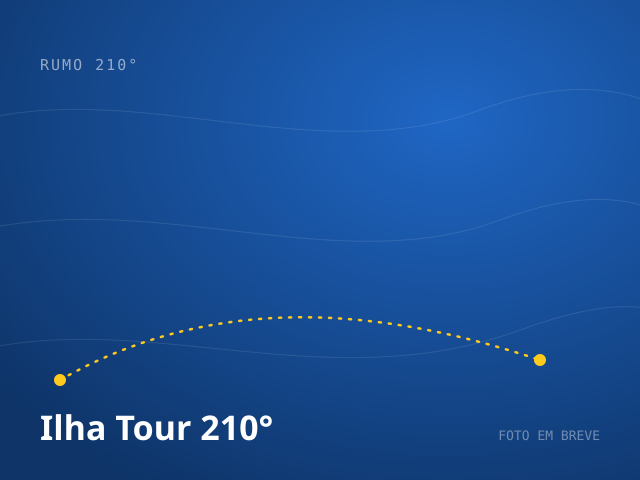

RUMO 090°

Ilha Tour 90°
Lagoa Azul e os pontos exclusivos da Costa Norte, fora do roteiro de todo mundo.
Ver roteiroConheça o Aventureiro e outras joias escondidas de Ilha Grande.
Um dos passeios mais completos da ilha. A lancha contorna Ilha Grande e visita praias oceânicas de difícil acesso, incluindo a famosa Praia do Aventureiro e seu coqueiro torto.
Aventureiros, casais, fotógrafos e grupos de amigos.

Lagoa Azul e os pontos exclusivos da Costa Norte, fora do roteiro de todo mundo.
Ver roteiro


Praia de Meros, Lagoa Verde e Araçatibinha: a combinação que só nós fazemos.
Ver roteiro